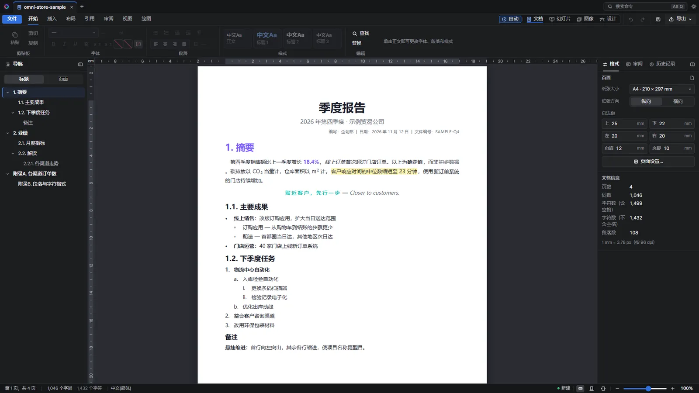
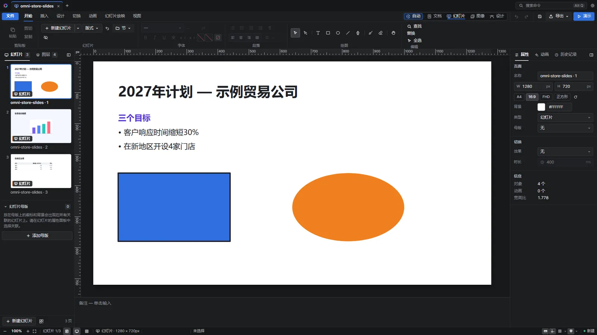
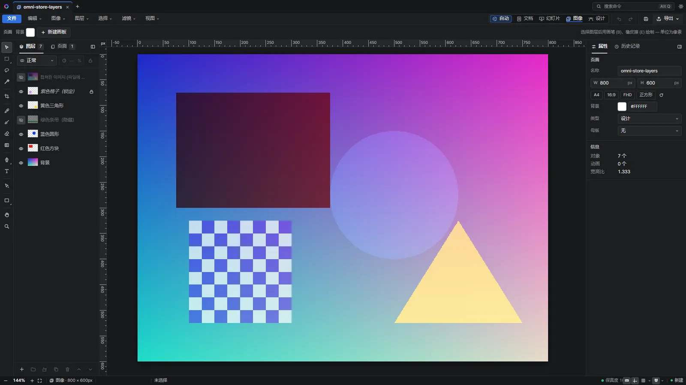
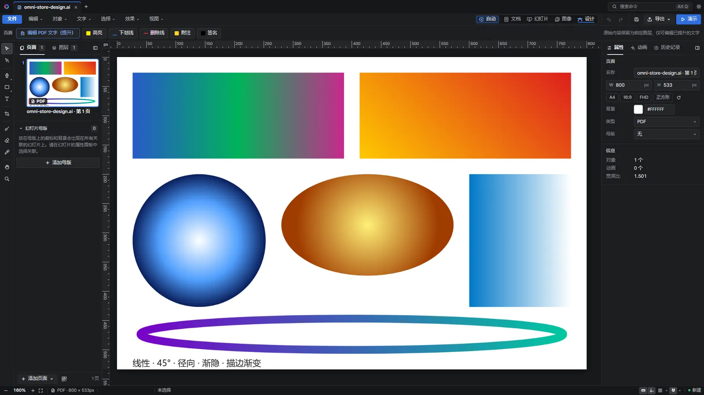
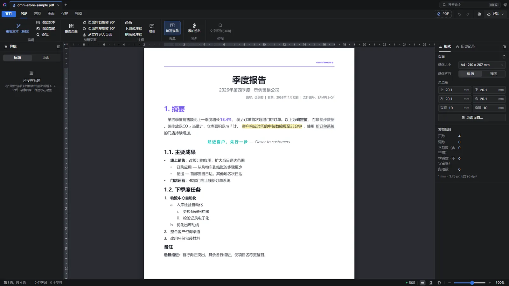
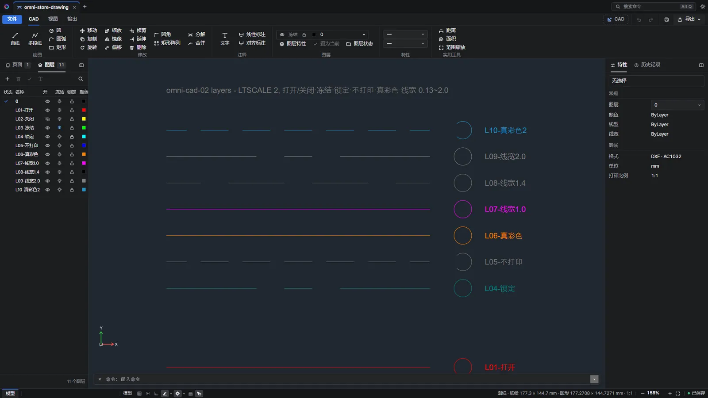

收到的文件五花八门，工作只需一个 .omw。
任何格式都在一块画布上打开和编辑。需要发送时，导出为原格式即可。
- 打开收到什么就打开什么
- 汇集工作都放进一个 .omw
- 导出发送时还原为原格式
目标让 .omw 成为人人都能读写的通用工作文件
界面导览
一个应用，
切换模式即可。
以下都是真实的应用界面，点选标签看看。

DOCX · HWPX · DOC · HWP
带标题导航和页面设置的文档编辑
- 切换模式
- 按标题导航
- 纸张大小与页边距

PPTX · PPT
母版、切换效果、幻灯片放映
- 幻灯片列表
- 切换效果
- 立即放映

PSD · PNG · JPG · WebP
原样打开 PSD 图层，继续编辑
- 图层
- 混合模式
- 绘图工具

AI · SVG
AI 文件中的形状和渐变原样保留
- 页面
- 钢笔与形状工具
- 尺寸预设

把文字变成可编辑对象，直接修改
- 编辑文字
- 整理页面
- 批注、表单、签名

DWG · DXF
导入图纸，编辑图层和线条
- 图纸图层
- 修改命令
- 命令行
界面中的文件是为测试制作的示例。
.omw 格式
不上锁的
工作文件。
要成为到处通用的文件，首先得人人都能打开。所以 .omw 从一开始就是开放的。
- 就是一个 zip用任意解压工具都能打开查看内容，加了密码的文件除外。
- 结构公开哪些内容放在哪个文件里，都有公开的文档说明。
- GPL 开源读写 .omw 的代码人人都可以查看、修改和复用。
目标目前能打开 .omw 的只有 Omniweave。我们的目标是让它成为其他工具也能读写的通用格式。
查看包结构
document.omw ├── mimetype 格式标识（第一项，不压缩） ├── manifest.json 元数据和页面索引 ├── scene_graph.cbor 全部编辑内容 ├── rasters/<hash>.raw 去重后的 256×256 像素图块 ├── assets/<hash>.<ext> 图片、PDF、字体原件 ├── slides/slide_deck.json 幻灯片顺序与切换（只读副本） ├── vectors/paths.json 矢量路径（只读副本） ├── documents/document.xml 文档段落（只读副本） └── documents/preview.txt 用于搜索的纯文本
Omniweave 只读取 scene_graph.cbor 和各个数据块，副本是为其他工具准备的。每次打开都会重新校验所有数据块的哈希，只跳过损坏的部分。
用数据说话
只写实测的数字。
测量条件与局限
- 安装包：Omniweave_0.2.0_x64-setup.exe，17,464,150 字节（未签名构建），每个版本可能不同。
- 实际工作文件：2026-11-22 发布前检查。结果均为成功、部分或提示（说明无法打开的原因）之一。不公开文件名和内容。
- 原样保存：仓库中的 DOCX、HWPX、XLSX、PPTX、PDF 样本全部通过，PSD 为 259/259。
- 联网只用于检查新版本 (GitHub Releases)。
- 加密文档（PDF AES-256、Office Agile、.omw AES-256-GCM）编辑后会重新加密保存。
- 这是早期版本，重要文档请另外保留原件。
Loom 引擎
只重绘、只重存
改动的部分。
每个图块和对象都有内容地址，相同的数据只保存一次。
原理与测量条件
- Thread256px 图块、对象、资源各有 64 位内容地址。相同的图块在文件中只存一次。
- Weave Cache屏幕图块的键就是覆盖该区域的数据块地址的哈希。没有失效处理代码，因此从结构上杜绝了残留旧像素这类错误。
- Shuttle Journal只把新出现的数据块写入 IndexedDB。自动保存很轻，异常退出后也能恢复。
- 不可变历史撤销只是替换文档引用，不复制像素。
用 npm run bench (Vitest bench, Node) 测量合成 4K 文档：205 个图块引用中只有 42 个不同，51.3 MiB 原始像素保存为 1.43 MiB 的 .omw，撤销加重做耗时 0.09–0.18 ms（深拷贝同一文档需 24–28 ms）。保存后重新打开：损坏 0、缺失 0。设备：Intel Core Ultra 5 125H、Windows 11、Node v24.13.1。不含绘制时间。
在网格上涂抹试试，只重绘碰到的图块。
常见问题
常见问题
有了它就不需要其他软件了吗？
不是。我们的方向是在一个地方处理多种格式，分色印刷、高级滤镜等专业功能目前不在范围内。
保存为其他格式会丢内容吗？
如果有内容无法带过去，保存前会告诉你具体缺少什么。
对方没有 Omniweave，怎么打开 .omw？
请导出为 DOCX、PDF 等原格式再发送。.omw 本身是 zip，里面的图片和文字副本也能用其他工具取出。
所有文件都能正确打开吗？
每种格式都标明支持程度：完整、部分或提示。PSD 的部分效果和 PPTX 的部分形状会近似绘制，HEIC 照片等无法打开的文件会说明原因。打不开的文件欢迎反馈给我们。
名字的由来
为什么叫“欧梅”？
“오메！”(Ome)是韩国全罗道人吃惊或赞叹时脱口而出的方言，意思接近“哎呀！”“哇！”。它也是 Omniweave 的开头字母。
“一个文件全搞定？오메！”
- 한국어
- 오메[o.me]
- English
- Oh-meh/oʊ.meɪ/
- 日本語
- オメome
- 中文
- 欧梅Ōuméi